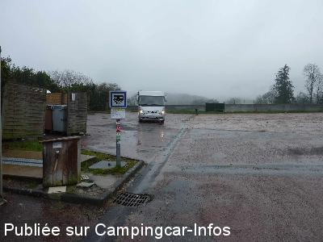

ASN = Aire de services avec stationnement nuit possible de :
ANOST
(N° 201)
Accès/adresse :
Place Centrale
71550 ANOST
71550 ANOST
Latitude : (Nord) 47.07734° Décimaux ou 47° 4′ 38′′
Longitude : (Est) 4.09855° Décimaux ou 4° 5′ 54′′
Tarif : Gratuit
Services :


Tous commerces
Autres informations :
Fermé en août pour cause fêtes
10 emplacements
Tel : + 33 (0)385 827 326

Le 20/03/2015 par JTàT
de
JTàT
le 20/03/2015 :
Avons bivouaquer la nuit du 8/12/14. Nuit hyper calme.
Avons bivouaquer la nuit du 8/12/14. Nuit hyper calme.
de
Jacques
le 11/11/2008 :
La municipalité d'ANOST informe que l'aire camping car sera améliorée:implantation
d'une nouvelle borne et un second lieu d'accueil (sans borne mais plus calme près
d'un ruisseau) sera aménagé à l'entrée du village .
La municipalité d'ANOST informe que l'aire camping car sera améliorée:implantation
d'une nouvelle borne et un second lieu d'accueil (sans borne mais plus calme près
d'un ruisseau) sera aménagé à l'entrée du village .
de
JEAN MARIE
le 06/03/2007 :
J'ai stationné sur "l'Aire" d'ANOST en Septembre 2006, j'ai eu bien du mal à la trouver car en fait les panneaux de signalisation avaient été retirés. J'ai passé une nuit calme mais peut - on parler d'aire ou doit - on plutot dire parking?
Le Morvan est une région magnifique (lacs, eau vive, forêts, collines) bien enclavée, assez près de Paris, les emplacements pour stationner en pleine nature sont innombrables. A Anost, on est au pied du Haut Folin par Arleuf. Je stationne généralement a mi-pente en retrait d'un parking non aménagé et je jouis en plus d'une tranquillité absolue et d'un paysage remarquable. Laissez tomber Anost...
J'ai stationné sur "l'Aire" d'ANOST en Septembre 2006, j'ai eu bien du mal à la trouver car en fait les panneaux de signalisation avaient été retirés. J'ai passé une nuit calme mais peut - on parler d'aire ou doit - on plutot dire parking?
Le Morvan est une région magnifique (lacs, eau vive, forêts, collines) bien enclavée, assez près de Paris, les emplacements pour stationner en pleine nature sont innombrables. A Anost, on est au pied du Haut Folin par Arleuf. Je stationne généralement a mi-pente en retrait d'un parking non aménagé et je jouis en plus d'une tranquillité absolue et d'un paysage remarquable. Laissez tomber Anost...
de
jayet
le 16/08/2006 :
impossible d'y aller car une petite fete foraine s'est installé sur cette place le week-end du 15 aout 2006.
impossible d'y aller car une petite fete foraine s'est installé sur cette place le week-end du 15 aout 2006.
de
Sophie Henry
le 20/07/2005 :
A priori petit village calme (passé 1 nuit il y a 2 ans sans problème). Mais apparemment à éviter le samedi soir : entre les mobilettes et le motard fou qui est venu tourné exprès devant les CC tard dans la nuit + parcage de car en pleine nuit sur la même place que les CC...
Les emplacements sont pratiques, mais il y a le moteur du container réfrigéré du bistrot d'à côté qui tourne toute la nuit, plus, comme dans beaucoup d'endroits, les poubelles et les containers à verres (que les gens prennent un malin plaisir à venir remplir le dimanche matin à 7h00 !?!). Quant aux services, c'est tout ce qu'il y a de plus "sobre" : un petit robinet et une grille d'égoût !
Vraiment dommage que les communes qui nous accueillent nous parquent si souvent avec les poubelles...
A priori petit village calme (passé 1 nuit il y a 2 ans sans problème). Mais apparemment à éviter le samedi soir : entre les mobilettes et le motard fou qui est venu tourné exprès devant les CC tard dans la nuit + parcage de car en pleine nuit sur la même place que les CC...
Les emplacements sont pratiques, mais il y a le moteur du container réfrigéré du bistrot d'à côté qui tourne toute la nuit, plus, comme dans beaucoup d'endroits, les poubelles et les containers à verres (que les gens prennent un malin plaisir à venir remplir le dimanche matin à 7h00 !?!). Quant aux services, c'est tout ce qu'il y a de plus "sobre" : un petit robinet et une grille d'égoût !
Vraiment dommage que les communes qui nous accueillent nous parquent si souvent avec les poubelles...